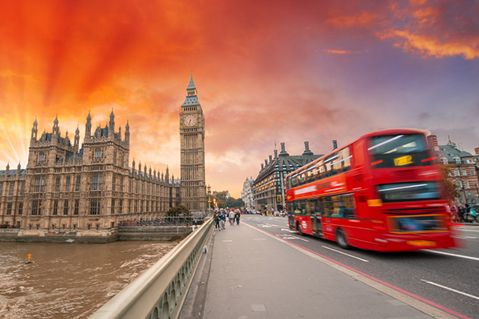

EASY TRAVEL
Города и страны
Отели
Транспорт
Экскурсии

Лондон
Лондон - столица Соединенного Королевства Великобритании и Северной Ирландии и крупнейший город на Британских островах, один из крупных портов Британии и главный промышленный центр страны. Площадь: 1,572 кв. км. Население: 7,200,000 человек. На протяжении почти 64 км через Лондон протекает широкая река Темза, которая разделяет город на две примерно равные части. Район Сити, большинство музеев, магазинов и ресторанов лежат к северу от Темзы. Лондон – второй по величине город Европы и седьмой по величине в мире. Знаменитый нулевой меридиан, который делит мир на восток и запад, пролегает через восточный район Лондона - Гринвич Лондон - один из самых интересных городов Европы - это город туманов, искусства и финансов. В Лондоне находится 5 аэропортов, в том числе известный аэропорт - Хитроу. Лондон - космополитическая смесь всех стилей и эпох истории страны, щедро "приправленная" пестрым многонациональным населением. В столице неимоверное количество достопримечательностей, включая всемирно известные исторические места, множество великолепных магазинов и несравнимая ни с чем ночная жизнь.Желающим отдохнуть на природе также предлагаются впечатляющие возможности для выбора. Почти треть столицы составляют парки, живописные площади и красивые улицы. Одно из главных преимуществ Лондона — разветвленная инфраструктура. В городе есть пять международных аэропортов и высокоскоростная железнодорожная линия Eurostar. Только три часа потребуется, чтобы из Лондона добраться по воздуху в одну из 50 стран. 310 государств имеют прямое сообщение со столицей Великобритании. История британской столицы насчитывает несколько тысячелетий. Город по праву гордится четырьмя памятниками, внесенными в список объектов всемирного наследия ЮНЕСКО. Это Вестминстерский дворец и Вестминстерское аббатство, Лондонский Тауэр, парк «Морской Гринвич» (Maritime Greenwich) и Королевский ботанический сад Кью.